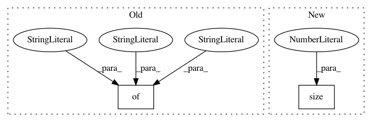

5a2f76ede044b4904af9461e18253f2929cfc5a4,fairseq/models/levenshtein_transformer.py,LevenshteinTransformerModel,initialize_output_tokens,#LevenshteinTransformerModel#Any#Any#,435
Before Change
initial_attn = initial_output_tokens.new_zeros(
src_tokens.size(0), 2, src_tokens.size(1)
)
return {
"output_tokens": initial_output_tokens,
"output_scores": initial_output_scores,
"attn": initial_attn,
}
class LevenshteinTransformerDecoder(TransformerDecoder):
def __init__(self, args, dictionary, embed_tokens, no_encoder_attn=False):
After Change
initial_attn = torch.empty([0])
if getattr(self.decoder.layers[-1], "need_attn", True):
initial_attn = torch.zeros([src_tokens.size(0), 2, src_tokens.size(1)]).to(
initial_output_tokens
)
In pattern: SUPERPATTERN
Frequency: 3
Non-data size: 2
Instances
Project Name: elbayadm/attn2d
Commit Name: 5a2f76ede044b4904af9461e18253f2929cfc5a4
Time: 2019-10-23
Author: dnn@fb.com
File Name: fairseq/models/levenshtein_transformer.py
Class Name: LevenshteinTransformerModel
Method Name: initialize_output_tokens
Project Name: facebookresearch/poincare-embeddings
Commit Name: 5f465041619a63bf1de99c55d1298865bf70fd9e
Time: 2020-01-07
Author: mattle@fb.com
File Name: reconstruction.py
Class Name:
Method Name: